Урок 12. Циклы.
14 Января 2023

Загрузить материалы к уроку.
Цикл for in
Само по себе слово цикл предполагает повторение каких-либо действий один или несколько раз.
Циклы for-in используется для перебора значений всех видов коллекций. давайте посмотрим на его синтаксис:
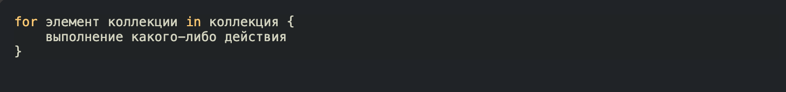После ключевого слова in мы определяем какую либо коллекцию, это может быть что угодно диапазоны чисел, элементы массива, элементы словарей, множеств, символов в строке и других последовательностей. А после ключевого слова for мы определяем последовательно элемент этой коллекции.
Для понимания работы цикла, мы с вами возьмем несколько коллекций и разложим их на элементы:
То есть эти значения мы будем перебирать в цикле. Это не функциональный код, я просто хочу вас навести на правильные мысли.
Теперь обратимся снова к синтаксису цикла и постепенно попытаемся разложить наши коллекции:
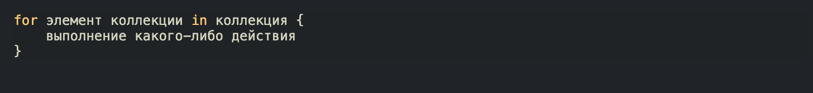После ключевого слова in мы должны определить коллекцию, мы начнем с массива names, то есть мы будем перебирать имена:
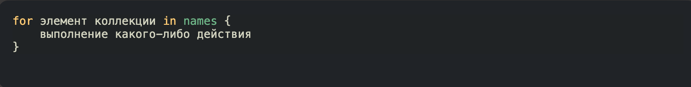После ключевого слова for мы должны как то назвать элемент перебираемой коллекции, так как у нас это имена, то один элемент будет именем, так его и назовем:
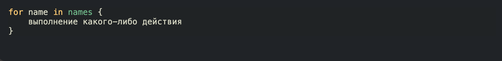После ключевого слова for мы определили свойство name, оно будет в себе хранить значение одного элемента из коллекции, которую мы определяем после ключевого слова in.
Возникает резонный вопрос, какое значение примет свойство name, если в коллекции не один элемент, а много?!
Все очень просто, оно будет принимать последовательно каждый элемент коллекции, каждую итерацию(проход) цикла. Звучит очень страшно, но на самом деле все просто.
Итерация, это по сути выполнение блока кода в фигурных скобках цикла:
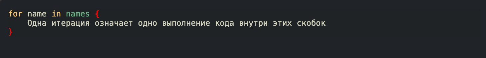Количество таких итераций, будет зависеть от количества элементов коллекции, которую вы определите после ключевого слова in.
Внутри фигурных скобок, вы можете использовать свойство name, оно доступно только в этой локальной зоне. Давайте выведем на консоль все имена из коллекции:
Запустим проект и посмотрим на консоль:
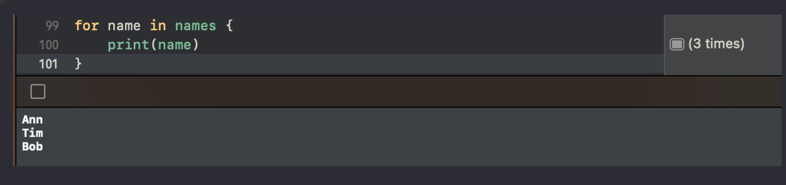Обратите внимание что все имена располагаются с новой строки, то есть цикл каждую новую итерацию вызвал новый принт, с новыми данными. Справа вы можете видеть в круглых скобках 3 итерации, то есть блок кода в фигурных скобках был выполнен 3 раза.
давайте проследим каждую итерацию нашего цикла.
Первая итерация, свойство name инициализируется первым элементом из коллекции:
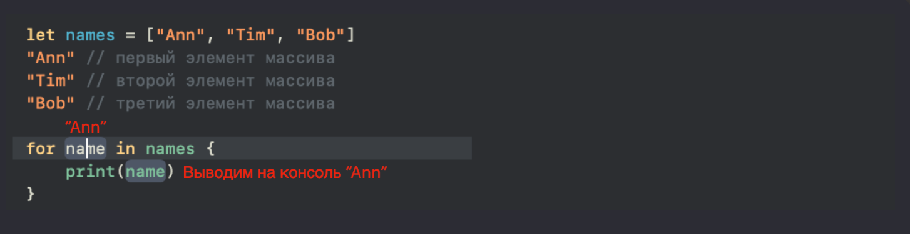Вторая итерация, свойство name инициализируется вторым элементом из коллекции:
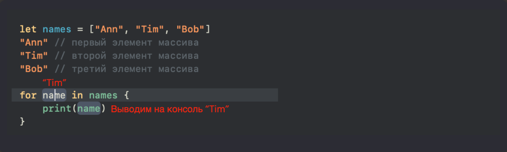Третья итерация будет последняя, так как элементов в коллекции больше нет, свойство name инициализируется третьим элементом из коллекции:
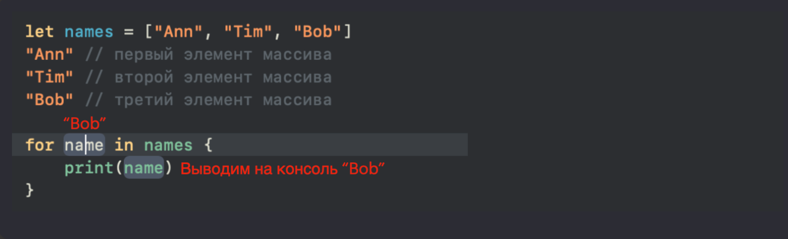Таким образом принт будет вызван три раза, и мы увидим три разных имени, потому что свойство name будет принимать последовательно(попорядку) каждый элемент коллекции
Свойство после ключевого слова for является константой, мы не можем его изменять, при этом ключевое слово let писать не нужно.

давайте для закрепления переберем оставшиеся наши две коллекции:
после ключевого слова in мы определяем эту коллекцию:
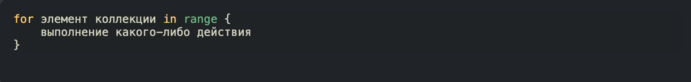Теперь нужно подумать над названием одного элемента из нашего диапазона. На самом деле к именованию этого свойства нужно отнестись серьезно, оно должно отражать суть перебираемой коллекции, а так же его цель в блоке цикла. Что я имею в виду, предположим что мы хотим при помощи данного диапазона отобразить на консоли все элементы из массива names.
Как мне это сделать?!
Давайте сперва инициализируем наш один элемент диапазона как index:
У нас будет три итерации, потому что в диапазоне три элемента (количество итераций равно количеству элементов коллекции):
свойство index будет последовательно принимать каждый из этих элементов, соответсвенно мы можем его использовать для того что бы взять каждый элемент из массива и вывести его на консоль.
Вспоминаем как достать один элемент из массива:
у нас есть index, который последовательно принимает значение от 1 до 3, и мы можем эти значения использовать в качестве индекса массива:
Так как индексы элементов из массива начинаются с нуля, а диапазон с единицы, то мы должны вычесть 1
Давайте проследим каждую итерацию:
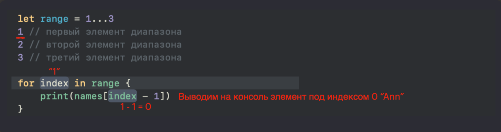Это была первая итерация, давайте взглянем на вторую:
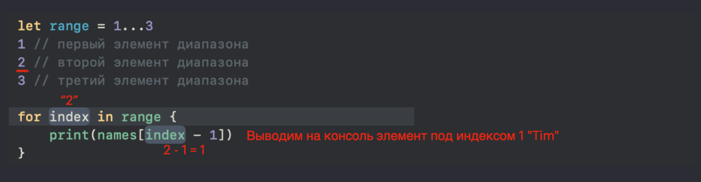Думаю вы уловили суть, третья итерация будет последней, потому что в коллекции range всего три элемента. И на кансоли мы снова увидим три имени подряд.
Если у вас есть массив и вам нужно взять каждый его элемент, то используйте перебор по массиву, а не по диапазону.
Так же нет необходимости определять для диапазона отдельное свойство, можно сразу его передать после ключевого слова in:
for index in 1…3 {}
Последнее что мы рассмотрим в этом блоке, это итерация по словарю
Создадим словарь, и так же распишем каждый его элемент для понимания.
Далее так же определяем в цикле необходимые элементы:
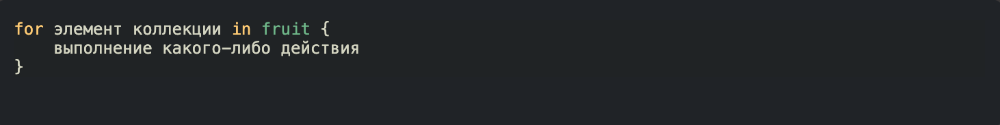один элемент нашей коллекции состоит из ключа и значения, и мы можем эти два значения определить в кортеже:
fruit принимает последовательно каждый ключ словаря, а count каждое значение словаря. Таким образом в блоке цикла нам доступны два свойства, с которыми мы можем делать что захотим. например можем фрукты добавлять в массив имен:
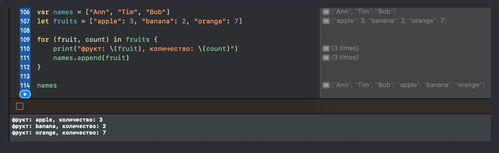Давайте рассмотрим самую первую итерацию, остальные вы уже додумаете самостоятельно:
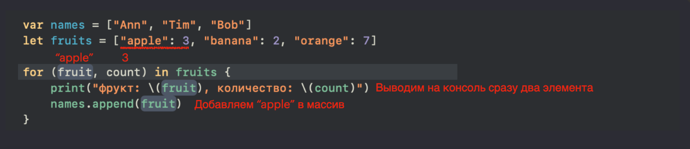Если вы не используете свойство после ключевого слова for, например если вы хотите просто вывести на консоль слово “Hello” три раза, то его нужно заменить нижним подчеркиванием:Если у вас есть массив и вам нужно взять каждый его элемент, то используйте перебор по массиву, а не по диапазону.
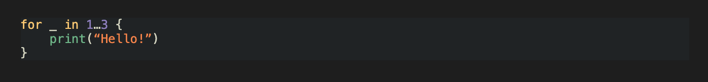то же самое и со словарями, если вам после ключевого слова for не нужен ключ или значение, то вы его просто опускаете, то есть заменяете нижним подчеркиванием.
Есть еще один способ перебрать словарь:
После ключевого слова in прописываем коллекцию, в нашем случае это словарь, а после for элемент этой коллекции, в нашем случае это пара. Каждую итерацию мы берем пару и выводим ключ и значение на консоль, обращаясь к соответствующим свойствам key и value, это системные названия.
По традиции, давайте проследим первую итерацию:
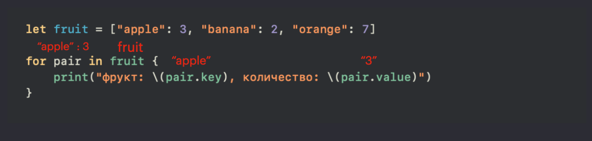Разница первого и второго варианта в том, что мы либо разделяем пару на два свойства, либо используем одно, но обращаемся к ключу и значению через свойства key и value.
Можно использовать любой из способов.
Давайте подведем итог.
– Цикл начинается с ключевого слова for.
– Свойство после for является константой, но для ее определения ключевое слово let писать не надо. И оно доступно только внутри цикла.
– Количество итераций зависит от количества элементов коллекции после ключевого слова in.

Цикл while
While цикл в Swift служит для повторения кода до тех пор, пока указанное условие истинно. Обычно используется, если вам не известен диапазон.
Давайте посмотрим на синтаксис данного цикла:
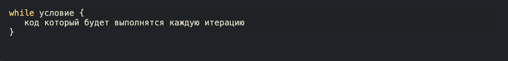Условие после ключевого слова while это логическое выражение, которое проверяется на истинность перед каждой итерацией цикла. Если условие истинно, то код внутри цикла выполняется, и процесс повторяется, пока условие истинно.
Давайте придумаем какой нибудь простой пример:
Если запустить данный код, то на консоли мы увидим цифры от 1 до 4
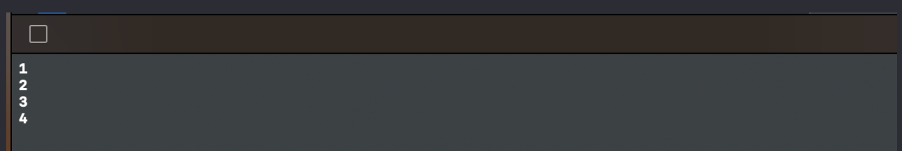Давайте проследим каждый шаг компилятора при запуске.
(1) Первым делом происходит инициализация и сохранение свойства count в памяти,
(2) далее компилятор видит ключевое слово while, понимает что это цикл, проверяет условное выражение после while, если оно возвращает true то он выполняет блок кода в фигурных скобках.
В нашем случае условие count < 5 возвращает true (потому что count равен 1, а 1 < 5), поэтому выполнится блок кода внутри цикла, а именно мы выведем значение count на консоль (в первую итерацию это значение равно 1), и после этого прибавим единицу к значению свойства count.
Это была первая итерация (первое выполнение кода в фигурных скобках), так как условие count < 5 вернуло true, то компилятор дальше не пойдет, а выполнит вторую итерацию.
Давайте проследим вторую итерацию:
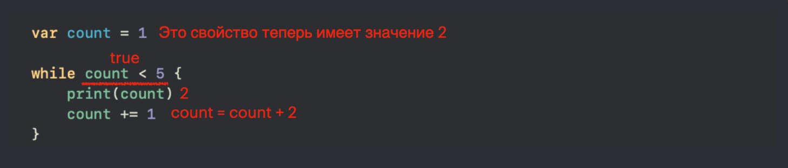Условие после while снова возвращает true. соответсвенно компилятор будет выполнять код внутри фигурных скобках. Выводим на консоль уже значение 2, и прибавляем к этой двойке 1.
Таким образом пока условие после while возвращает true, компилятор будет проверять условие и переходить на новые итерации.
Давайте сразу перейдем к моменту когда count будет равен 5, условие count < 5 вернет false, и компилятор завершит цикл:
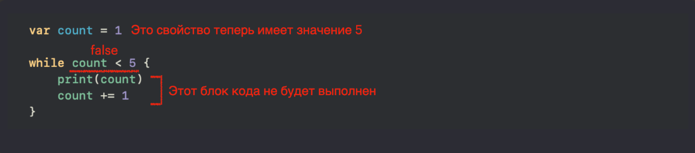Таким образом, пока условие возвращает true компилятор будет перепроверять это условие и выполнять код внутри фигурных скобок.
Как только условие возвращает false цикл останавливается и компилятор идет дальше. Пока цикл не завершит свою работу код после цикла не выполнится. Давайте это проверим:
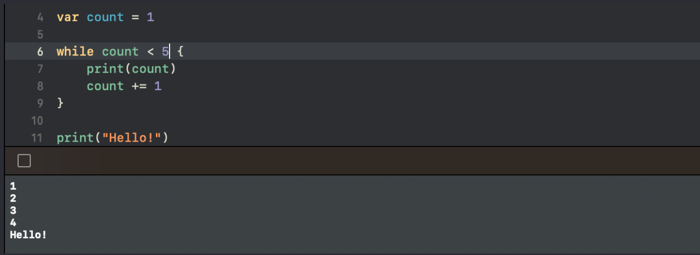Цикл провел 4 итерации и только после того как остановился вывел на консоль приветствие “Hello!"
Нужно обязательно проследить что бы условие после while в какой то момент возвращало false иначе вы рискуете запустить бесконечный цикл.
Давайте посмотрим на еще один интересный пример:
Как вы думаете, что мы увидим на консоли если запустим данный цикл?!
Если вы внимательно все читали, то ответ для вас будет очевиден, мы запустим бесконечный цикл, и бесконечные фразы “Hello!” на консоли. А все потому, что условие numbers.isEmpty всегда возвращает true, и мы ничего не предприняли что бы это поменять.
Давайте исправим ситуацию, и добавим в массив один элемент:
Таким образом у нас будет всего одна итерация и на консоли мы увидим всего одно приветствие, потому что когда компилятор пойдет проверять второй раз условие, оно вернет false, потому как в массиве уже появился один элемент.
Если после прочтения все равно сложно, то возьмите лист бумаги, карандаш, и пропишите каждую итерацию, какое было начальное значение, где получили новое, и что происходит в условии.
Давайте подведем итог.
– Цикл начинается с ключевого слова while.
– Количество итераций зависит от условия после while. Пока условие возвращает true цикл будет перезапускаться.
– Следите за тем что бы условие в какой то момент вернуло false, иначе будет бесконечный цикл, радужное колесико будет крутиться до тех пор пока вы не перезапустите playground.
Цикл repeat - while
Если вы хорошо усвоили цикл while, то с repeat – while точно не будет проблем.
В целом он работает точно так же, только прежде чем проверить условие компилятор выполнит блок кода в фигурных скобках, то есть одна итерация будет гарантированной.
Давайте посмотрим на синтаксис:
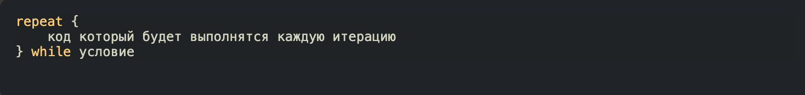Что бы понять работу данного цикла, снова вернемся к примеру с циклом while:
Если мы запустим компилятор, то наша консоль будет пустой, а все потому что условное выражение numbers.isEmpty возвращает false (наш массив не является пустым), соответсвенно код в фигурных скобках не выполняется, и цикл даже не запускается.
Теперь тоже самое мы проделаем с циклом repeat-whil:
В этот раз мы на консоли увидим одно приветствие, даже если условие вернуло false:
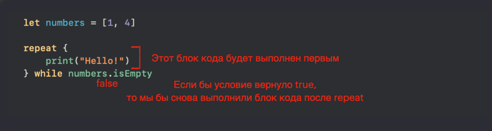Как вы видите ничего сложного нет, главное уловить суть.
Данный цикл используется достаточно редко. Если у вас не стоит задачи точно выполнить одну итерацию до проверки условия, то используйте всегда while.
Давайте подведем итог.
– Цикл начинается с ключевого слова repeat, после которого следует блок кода, который исполняется первым, и только после происходит проверка условия
– Одна итерация будет выполнена гарантировано, а все последующие уже в зависимости от условия после ключевого слова while.
– Здесь так же нужно следить за тем что бы условие в какой то момент вернуло false, иначе будет бесконечный цикл.
Операторы break и continue в циклах
На одном из уроков мы уже затронули оператор break в условной конструкции switch, но это не единственное место где его можно использовать. Циклы так же отлично с ним работают.
Если нам нужно остановить цикл в какой то момент, то мы можем использовать данный оператор.
Обратимся к примеру:
Давайте снова пройдемся по всем шагам, которые выполнит компилятор.
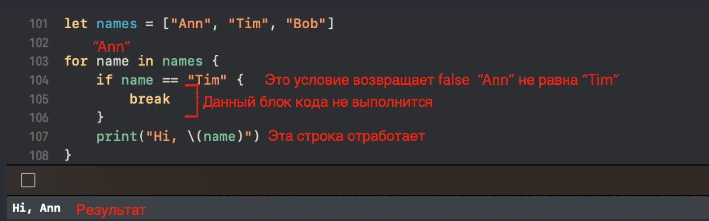Это была первая итерация, давайте прогоним вторую:
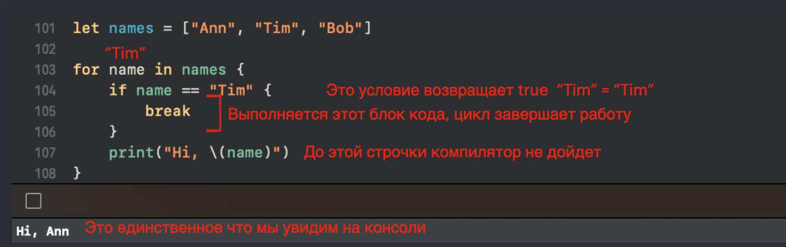Таким образом мы можем останавливать цикл в нужный нам момент.
При помощи этого оператора так же можно останавливать циклы while и repeat-while.
Код находящийся сразу после break в локальной зоне фигурных скобок, не будет выполнен.
Давайте теперь посмотрим как работает оператор continue.
Он создан для того что бы в нужный момент запустить следующую итерацию. Как это работает?!
Обратимся к тому же примеру, только вместо break поставим continue
На этот раз на консоли мы увидим два имени.
Снова пройдемся по итерациям:
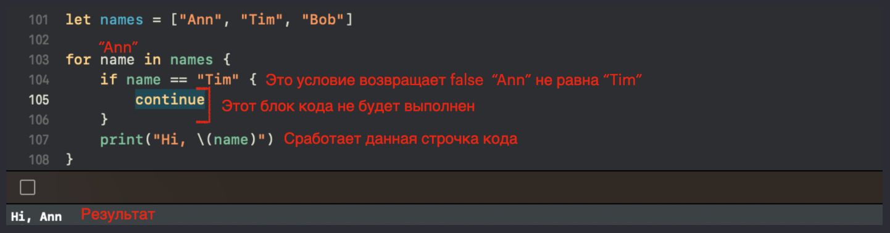Срабатывает вторая итерация:
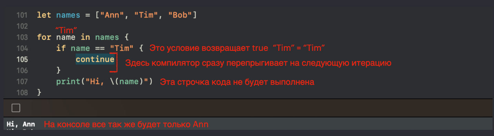То есть когда компилятор натыкается на оператор continue, он сразу же перескакивает на новую итерацию, то есть берет следующий элемент для проверки. при этом все что вы определите после ключевого слова continue, не будет выполнено: